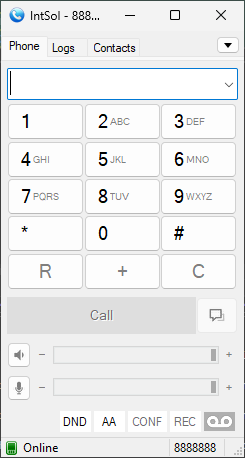
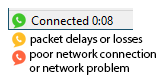
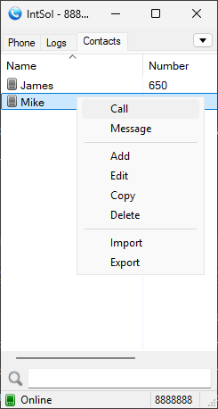
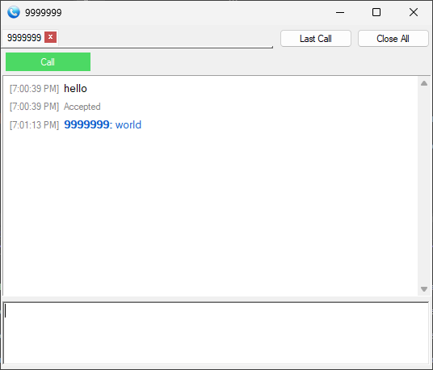
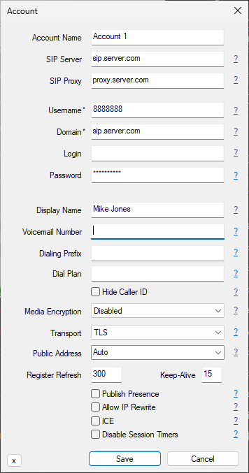
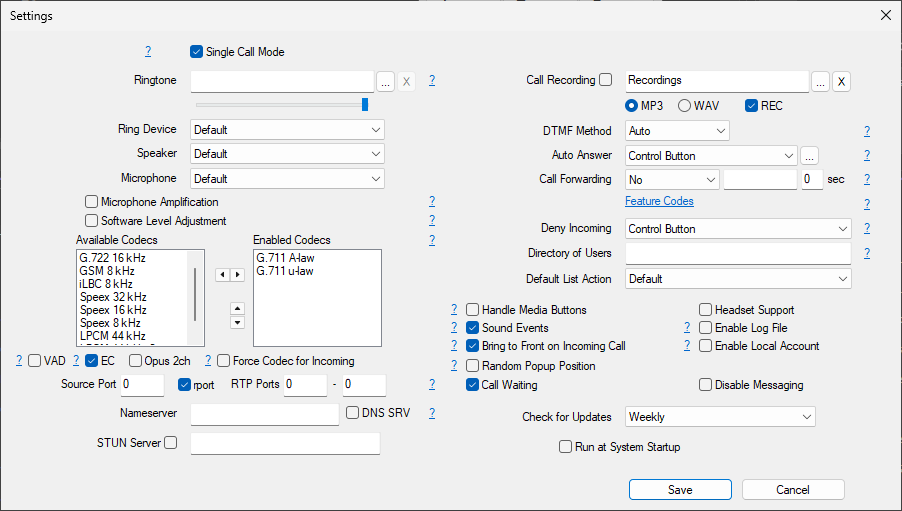
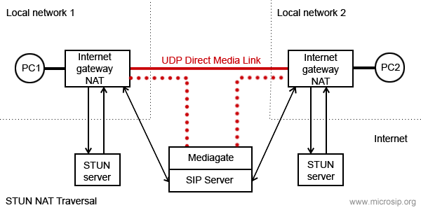

IntSol SIP Client Manual
IntSol SIP Client Manual
IntSol SIP Client is a branded custom build of MicroSIP
General
Softphone usage modes:- Single call mode - single window, basic functionality. Enabled by default.
- Extended mode - two windows, multiple calls, conferences, attended transfers.
- Calls through SIP server / PBX - select "Add Account" after installing.
- Direct calls by IP address (or domain name). Works out of the box, using the "Local Account".
After automatic startup or when you close the main window IntSol will be minimized to the system tray.
IntSol does not require the installation of additional libraries, runtimes or frameworks.
Dialpad
 Mainly used for dialing or sending dual tones (DTMF). Various input formats are supported.Example: 1-800-567-46-57, 1234, 1234@sip.server.com, 1234@sip.server.com:5043, 192.168.0.55.
Or even complete SIP URI with optional IntSol extensions:
"Name" <sip:extension@sip.solutionsdx.com;parameter1=xxx?Custom-Header=yyy>,dtmf_sequence
There is sound quality indication:
Control switches and buttons:
- DND (switch) - Do not disturb mode
- FWD (switch) - Automatic forwarding of incoming calls. Set up in the settings
- AC (switch) - Automatic conference for incoming calls after answering a call
- AA (switch) - Automatic answer. Set up in the settings
- CONF (button) - Invite a participant to a conference call
- REC (button) - Current call recording. Set up in the settings
Contacts
To add a contact, right-click in an empty area of the Contacts page. Only the Number field is required and it is unique in the list. Number can be specifind in various input formats, see above.
You can enable Presence Subscription to see contact availability status, use BLF functionality and pickup calls. This may require additional configuration of your SIP server. For some types of servers (not Asterisk), you must enable "Publish Presence" in the "Account" window to share your availability status for other contacts. After successfully setting up the presence, the entries in your contacts will turn colored.
When a contact receives an incoming call, its icon will blink. To answer the incoming call (directed call pickup), double click on it or use the context menu item - "Call Pickup".
Pickup code is hardcoded: "**". For example, to configure call pickup for Asterisk, add to
extensions.conf:
exten => _**.,1,Pickup(${EXTEN:2})
Messages
Allows you to manage multiple calls, make conferences, blind and attended transfers, send and receive messages.
Currently, most of these features are only available in Extended mode.
Account
- SIP server
Your account SIP server. - SIP proxy
Your account SIP proxy or a chain of proxies. Examples: 192.168.1.1, 192.168.1.1:5070, 192.168.1.1 192.168.15.1, 192.168.1.1;hide, ";hide" parameter can solve impossibility of registration or calls due to server configuration. - Username
Your account username. - Domain
Your account domain. - Login
Username for authentication. If empty, will be used Username. - Password
Your account password. - Display name
Your name, remote party will see it in incoming calls and messages. - Dialing Prefix
International calling prefix for numbers in local format (must begin with "+" or "00"); or a simple prefix for each dialing phone number. - Dial Plan
Transforms dialing number according to pattern. Numbers that do not match any patterns are blocked. Patterns are separated by a pipe symbol: |. The entire value can be enclosed in brackets ().x "x" represents any character [sequence] Enter characters within square brackets to create a list of accepted digits.
Numeric range: enter [2-9] to allow the user to enter any one digit from 2 through 9.
Numeric range with other characters: enter [16-9*] to allow the user to enter 1, 6, 7, 8, 9, or *.
<dialed:substituted> Replaces one sequence with another. Or inserts some sequence inside a number: <:substituted>
Example 1 : <8:1555>xxxxxxx
If user dials 81234567, the system transmits 15551234567.
Example 2 : <:1>xxxxxxxxxx
If user dials 1234567890, the system transmits 11234567890.
. (period symbol) Represents zero or more entries of the previous digit. Example, 01. => 0, 01, 011, 0111, ...; x. => matches any dialed number.
Example: Replace + with 00, allow any other numbers.<+:00>x.|x.Complex rule example:[3469]11|0|00|1[2-9]xx[2-9]xxxxxx|<:1>[2-9]xx[2-9]xxxxxx|<:1618>[2-9]xxxxxx|<:1618555>6[2-4]xx - Hide Caller ID
Your PBX must allow this feature. Otherwise, you probably won't be able to call. For FritzBox, clear this check box and change Display Name to "Anonymous". - Voicemail Number
Voicemail access number. If empty, IntSol will try to determine it automatically. - Media encryption (remark 1)
Disabled - never use encryption, Optional - use encryption when remote party supports encryption, Mandatory - use encryption always. Recommend value: Optional. - Transport
The value depends on the configuration of your SIP server. Failsafe value: UDP. Best value: TLS. TCP is good, but is may not work with your router/NAT due to SIP ALG enabled. "UDP+TCP" is a mix of UDP (for small request) and TCP (for large). - Public address
Can be used to solve call flow and media delivery issues when you don't have dedicated public IP address. You can manually specify IP address or hostname for Via, Contact and SDP. It can point to one of the interface address OR it can point to the public address of a NAT router where port mappings have been configured. For automatic public address detection and rewrite you can use Allow IP rewrite feature or use STUN server. - Local port
By default IntSol tries to listen on standard SIP port - 5060. If port is busy by other application, IntSol will listen on random port. You can manualy change port to any. - Publish presence
Sends on SIP server publish query, it means that other subscribed contacts can see your status and can pickup your incoming calls (BLF functionality). Besides, often you must specify which contacts have right to see your presence information - you can done this for example via SIP provider webpage. Your SIP server must support this feature. - ICE (remark
1)
Helps to find shortest way for media streams and reduce media latency. It is usefull when possible direct P2P connection without SIP provider mediagate. Enabling ICE can cause problems with in media delivery if SIP server configured incorrecly. - Allow IP rewrite
Can be used to solve call flow and media delivery issues when you don't have dedicated public IP address. If enabled, IntSol will keep track of the public IP address from the response of REGISTER request. Public IP will be used in later SIP queries in Via, Contact and SDP.
See also: Public address, STUN. - Disable Session Timers
Specify the usage of Session Timers. Try to disable Session Timers if your calls dropps after XX minutes. Recommended value: unchecked.
Settings
- Single call mode
Provides a simple user interface with limited functionality. You must disable this if you wish to manage multiple calls, make attended transfers or conference calls. - Ringtone
You can choose any WAV file on incoming call. - Microphone Amplification
Extends range of input signal level regulation by adding software amplification on top half of regulator. Default value - no. - Software Level Adjustment
Enables internal input level regulation instead of changing global level of input device. Note that hardware regulation has lower noise rating. Default value - no. - Audio Codecs (remark 1)
You can enable and disable codecs by moving it between lists. Also you can set codec priority (for outgoing calls) by moving codecs in right list. - VAD
Enables voice activity detection. Default value - no. - EC
Enable echo cancellation. Default value - no. - Force codec for incoming
Normally, caller defines codecs priority. For incoming calls this option allows you (callee) select prefered codec. - Disable H.264 codec
Normally caller defines codec that will be used by both parties. But some callees parties forces your selected codec with some other, but in same time they supports your codec. In this case you can disable unwanted codec. Default value - no. - Disable H.263 codec
See above. Default value - no. - Video codec bitrate
Set the maximum bitrate. If one party set 256 kbit/s and other 512 kbit/s - will be used 256 kbit/s for both. Dynamic scenes requires higher bitrates (~512 kbit/s), otherwise picture quality will fall down. - DTMF Method
Auto: IntSol will use RFC2833 for DTMF relay by default but will switch to in-band audio DTMF tones if the remote side does not indicate support of RFC2833 in SDP. Note: in-band method will not work properly with every audio codec due to compression algorithms. - Auto Answer
IntSol will play short tone and popup when call auto accepted. SIP header - when receiving the "Call-Info: Auto Answer" or "Call-Info: answer-after=0" or "X-AUTOANSWER: TRUE" in SIP header. Options: Delay - delay before auto answer. Caller Number - one or more numbers separated with ; or | and with wildcards allowed * ? ^ (^ indicates an optional character). - Call Forwarding
Automatic forwarding of incoming calls. - Feature Codes
Call transfer using a feature code instead of the standard SIP call transfer. You can also make an attended call transfer in single call mode with it. Your PBX must be configured to use this feature. - Deny incoming
Helps to block unwanted or spam incoming calls. Different user/domain/user-domain means that callee data do not match data in your account window. Different remote domain means that caller domain do not match domain in your account window. - Directory of users
Enter URL to obtain contacts from external source via HTTP(s). JSON and XML responses are supported. Use UTF-8 encoding.JSON format (recommended):
Test URL: https://pbx.solutionsdx.com/contacts-sample.json
{"refresh": 0, "items": [
{"number": "", "name": "", "firstname": "", "lastname": "", "phone": "", "mobile": "", "email": "", "address": "", "city": "", "state": "", "zip": "", "comment": "", "presence": 0, "starred": 0, "info": ""}
]}The incremental GET parameter "sequence" is automatically added to the URL.
If you do not use standard SIP presence, the JSON response may include presence data or carry only presence data:
{"refresh": 3,
"presence": [
{"number": "001", "status": "online", "info": "Online"},{"number": "002", "status": "offline", "info": "Offline"},{"number": "003", "status": "away", "info": "Away"},{"number": "004", "status": "busy", "info": "Busy"},{"number": "005", "status": "ring", "info": "Ring"},{"number": "006", "status": "phone", "info": "On the phone"}]
}XML format:
Test URL: https://pbx.solutionsdx.com/contacts-sample.xml
<?xml version="1.0"?>Also supported Cisco IP phone directory format CiscoIPPhoneDirectory, Yealink and some other - just try yours.
<contacts refresh="0">
<contact name="" number="" firstname="" lastname="" phone="" mobile="" email="" address="" city="" state="" zip="" comment="" presence="0" starred="0" info=""/>
</contacts>
To change the frequency of automatic refresh use "refresh" property or HTTP header "Cache-Control: max-age=3600", where 3600 - value in seconds. If zero or not specified will be used default value 3600 seconds.
- STUN server
Helps to make direct way for media streams without SIP provider media gate when NAT used. It open UDP ports on NAT server for incoming connections. Exists different NAT types (full cone NAT, (address) restricted cone NAT, port restricted cone NAT and symmetric NAT). You can use STUN only if your NAT is not symmetric! Otherwise you will have problems - you can not hear and can not hears you - remove it from settings. Default value - empty.
 - Handle Media Buttons
Enables handling of media keys or buttons events on multimedia keyboards or headsets with buttons (WM_APPCOMMAND message). Can be used for call answer, hold, resume and end call. - Headset Support
Enables HID-compatible headset button event processing and LED indication. Can be used to answer, hold, resume, and end a call by pressing a button on a USB or Bluetooth headset (Jabra, Plantronics, etc). You should not install headset manufacturer software as it may interfere with the standard headset interface. - Sound events
Playback key presses and signals of outgoing call. - Enable local account
Local account allows you make and receive calls without SIP server and SIP account. In this case you can call by IP address (or domain name) as number.
Note: local account always enabled if SIP account is not configured or disabled.
Example: sip:192.168.1.21 or just 192.168.1.21 or username@192.168.1.21. - Enable log file
Activates IntSol log file. Used for debugging. To open log file right click on tray icon. - Random position of the answer box
Display incoming call window at random position on the screen and random monitor if many. - Send crash report
Automatically send crash report to the IntSol team for analyse. Report includes OS name and version, log file (if enabled in Settings). It never contains your passwords.
Settings not included in Settings dialog
You need to modify IntSol.ini manually.- "cmdCallStart" - runs specified command when connection established. Caller ID passed as parameter.
- "cmdCallEnd" - runs specified command when call ended. Caller ID passed as parameter.
- "cmdIncomingCall" - runs specified command when incoming call arrives. Caller ID passed as parameter.
- "cmdCallAnswer" - runs specified command when user answers on incoming call. Caller ID passed as parameter.
- "autoHangUpTime" - automatically end a call after a specified number of seconds.
- "maxConcurrentCalls" - reject incoming calls if limit reached.
- "noResize" - prevent resizing of the main window.
- "userAgent" - use a custom User-Agent value of outgoing SIP requests.
- "multiMonitor" - allow multiple monitor mode.
- "portKnockerHost=host.com" - domain name or IP address of knocking host. If empty and port list isn't empty - SIP server value will be used.
- "portKnockerPorts=1111,2222" - one or more ports separated by comma. If empty - feature disabled.
Shortcuts
- Toggle
Shortcut button becomes toggle. When turning on, the first number is called, when turning off, the second. - BLF
Enable subscription and presence indicator, as it implemented for contacts.
DTMF
While you are in call you can press buttons on dialpad to send DTMF signals. If you want automatically pass DTMF commands just after call established, then add ",dtmf_sequence" or ",dtmf_sequence1,dtmf_sequence2" in calling number. One comma means pause in one second.Video
Supported H.264 and H.263+ (other name H.263-1998) video codecs. Default codec - H.264, video format - 640x480 @ 30 fps, outgoing bitrate 512 kbit/s. H.264 encoding requires significant CPU resourse. Recommended dual core processor, multimedia extensions like MMX will be used if is present.Video capture and video rendering uses DirectX and Direct3D (with hardware acceleration).
Because hardware acceleration is used, video calls will not work with remote desktop session (RDP).
If you have serious problems with performance:
- update video adapter drivers
- install/reinstall DirectX
Command line
Call a number: IntSol.exe numberHang up all calls: IntSol.exe /hangupall
Hang up all incoming: IntSol.exe /hangupincoming
Hang up all calling: IntSol.exe /hangupcalling
Answer a call: IntSol.exe /answer
Call transfer: IntSol.exe /transfer:XXX
Send DTMF: IntSol.exe /dtmf:12345
Start minimized: IntSol.exe /minimized
Reset configuration and delete all data: IntSol.exe /reset
Reset configuration and delete all data (without confirmation): IntSol.exe /resetnoask
Exit: IntSol.exe /exit
Hotkeys
The phone's main window must be active.
F2 - answer a callF4 - terminate all calls
Remarks
- Remark 1
This feature increases an UDP packet size (SDP message length of INVITE query). If UDP packet size will be > 1500 bytes (MTU), it will be fragmented. Not all routers can correctly work with fragmented UDP packets. So, if you enable extra feature like SRTP, or ICE, or select too many enabled codecs, or make video call, be ready that you will not be able make a call. Possible solutions: use a TCP or TLS transport, but in this case your SIP server must support it. Please note that TCP may not work with SIP ALG enabled on your router.